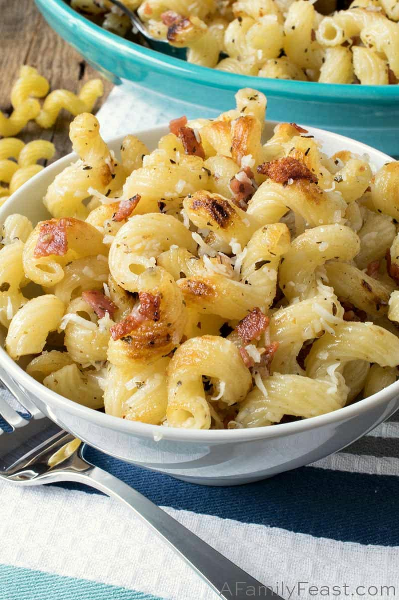

Fried Garlic Pasta

What an easy and delicious fried garlic pasta! Like Ma's recipe!
Ingredients
- 1 pound angel hair pasta
- 2 cups olive oil for frying
- 2 bulbs garlic, peeled and diced
- 1 cup grated Parmesan cheese
Steps
- Bring a large pot of lightly salted water to a boil. Cook angel hair in boiling water, stirring occasionally, until tender yet firm to the bite, 4 to 5 minutes; drain.
- Heat olive oil in a saucepan over medium heat until a piece of garlic dropped into oil gently sizzles. Add remaining garlic; cook and stir until golden brown, 5 to 7 minutes. Remove fried garlic to a paper towel-lined plate using a slotted spoon and set aside; reserve garlic-infused olive oil.
- Place angel hair onto individual serving dishes and sprinkle with fried garlic. Drizzle with some of the garlic-infused olive oil and sprinkle with Parmesan cheese. Reserve any remaining garlic-infused olive oil for another use.
Homepage